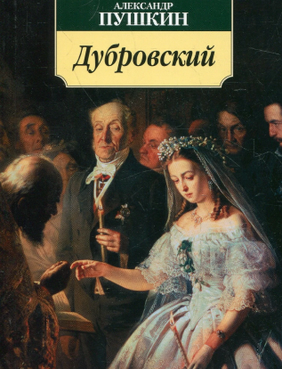

Дубровский
АвторПушкин А.С.
Языкрусский
Жанрыроман
Возрастные ограничения16+
Переплетмягкий
Цена370 р
Кто отдаст
Викентий

09.07.2023
Сейчас, когда от разных изданий классики просто рябит в глазах, хочется, конечно, выбрать издание «по себе» и не ошибиться. Долго я присматривалась к «Дубровскому» - люблю это произведение нежно еще со времен школы — и наконец решилась! Нужно сказать, что у меня еще не было ни одной из «101 книги», и я побаивалась, что первое впечатление может оказаться не таким, как я ожидаю.
Евгений Лисицин
18.01.2020
Приобретала издание для ребёнка в нашу школьную библиотеку. Вспомнила "Дубровского" своего детства- простенькая книжица с жёлтыми страницами.
Любовь

09.08.2023
Знаменитую повесть Александра Сергеевича Пушкина "Дубровский" я очень любил читать и перечитывать в детстве. Даже то, что она входила в обязательную программу для школьного чтения, не отбило моего к ней интереса. Почему-то в детстве я был очень увлечен темой благородных разбойников, а Робин Гуд был одним из моих любимых персонажей. А ведь Владимир Дубровский - почти наш русский Робин Гуд.
Сюжет повести "Дубровский" знают, наверное, все. История про благородного дворянина-разбойника, у которого несправедливо отобрали всё имущество, оставив только жажду мести и любви, знакома даже тем, кто её не читал. И ведь удивительно, как современна сегодня повесть Пушкина. Богатый самодур помещик Троекуров, который развлекается тем, что заталкивает своих не особенно важных гостей в комнату с диким медведем, так напоминает современного олигарха. А потерявшего из-за коррумпированных чиновников своё имущество Дубровского, кажется и сейчас можно встретить на улице города. И это не случайно. "Дубровский"— повесть на все времена. Всегда будут богатые злодеи при власти, а также их жертвы и гордые мстители. Сюжет полон неожиданных поворотов, приключений и, конечно же, любви. Персонажи яркие и живые. А над всем этим господствует неповторимый пушкинский слог. Повесть Пушкина понравится юным читателям, поможет им заинтересоваться классической литературой и, уверен, знакомство с ней станет стимулом к прочтению новых серьёзных книг